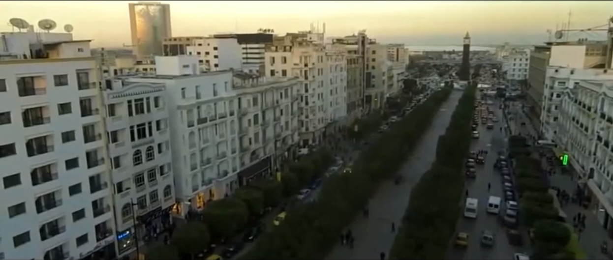
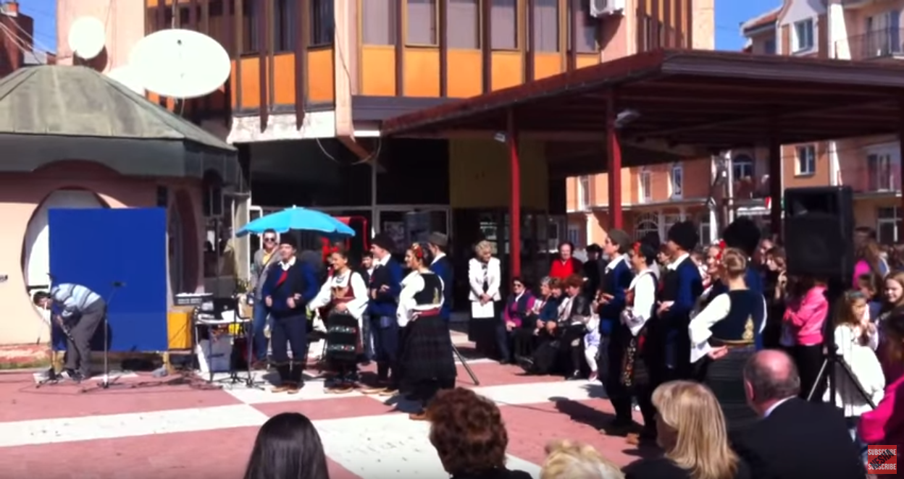

Cadre : Un événement musical d’envergure assuré par des Troupes musicales locales et internationale
Slogan : Partage d’acculturation & Respect mutuel entre les peuples
Une vacance liée avec des événements
Action: Carnaval musical festif « Animation, Art de la rue, musique, chans, dance et folklore populaire ».
OBJECTIFS :
Créer un environnement de fraternité et d’amitié humaine on luttant les préromanes violents.
Faire évoluer et renforcer l’alliance entre la culture et la coopération économique.
Contribution à la réalisation aux tendances de tourisme d’événementiel.
Introduction:
Le Carnaval de la Tunisie pour la Musique Universelle «CTM U» est une logique évènementielle
annuelle initié en Tunisie par Mr Idoudi Abdelfattah président de l’Agence des Techniques de
Communication et du Marketing « ATCM Tunisie ».
Nos Sponsors :
Troupes Participantes (phase : 26 Mars 2020- 4 Avril 2020):
Site archéologique : Video:

Ouvrir Vidéo photo: Audio:

Ouvrir AudioACTUALITÉS
Troupe la Majorette